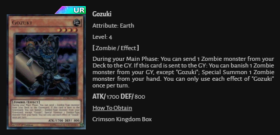
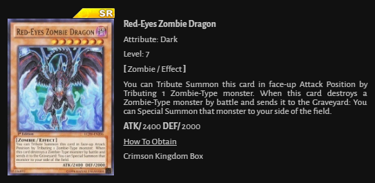
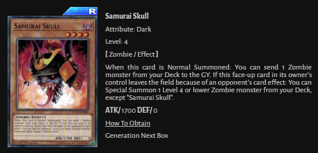
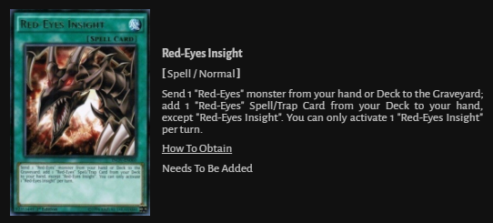
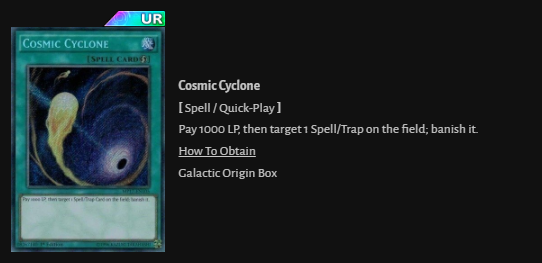
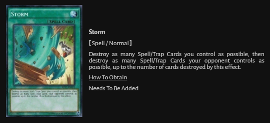
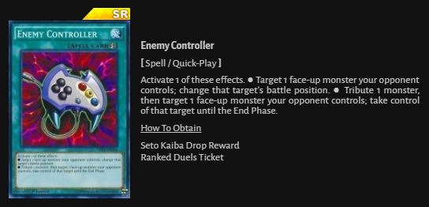
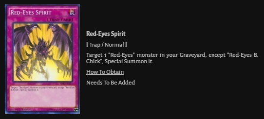
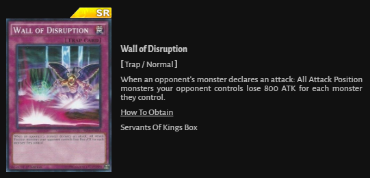
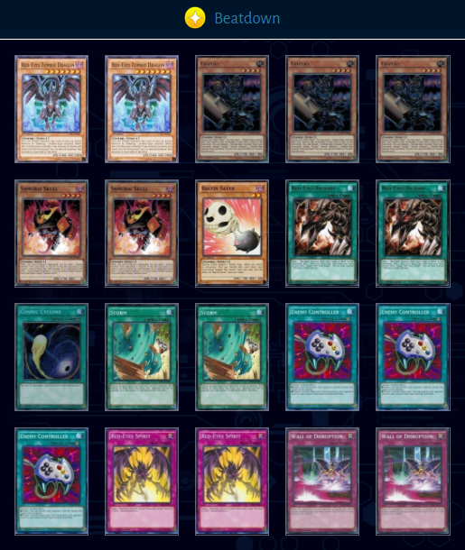

How To Get Carts










Red-Eyes Zombies is a top tier deck because it is one of the most versatile decks in the game since the day it came out. Red-Eyes Zombies can keep it’s core cards and tech-in certain cards to adapt to the meta as it evolves. The decks main engine revolves around Gozuki, the most important card of the deck next to Red-Eyes Zombie Dragon.
The deck can be played two ways: as an agressive OTK (One Turn Kill) deck or a semi-agressive control deck depending on the tech cards you run. For example, a Red-Eyes Zombies deck that has only anti-backrow, 3 Enemy Controllers and it’s core cards is built for an OTK. The Red-Eyes Zombies decks that run Wall of Disruption, Mirror Walls, Snipe Hunter and other techs play more like a control deck. Both versions of this deck dominate in competitive tournaments as well as the Duel Links Ranked ladder.
The biggest drawback of this deck is it’s ability to start you off with completely unplayable hands. This doesn’t happen often but happens enough to make Red-Eyes Zombies players pull the hair out of their heads.
